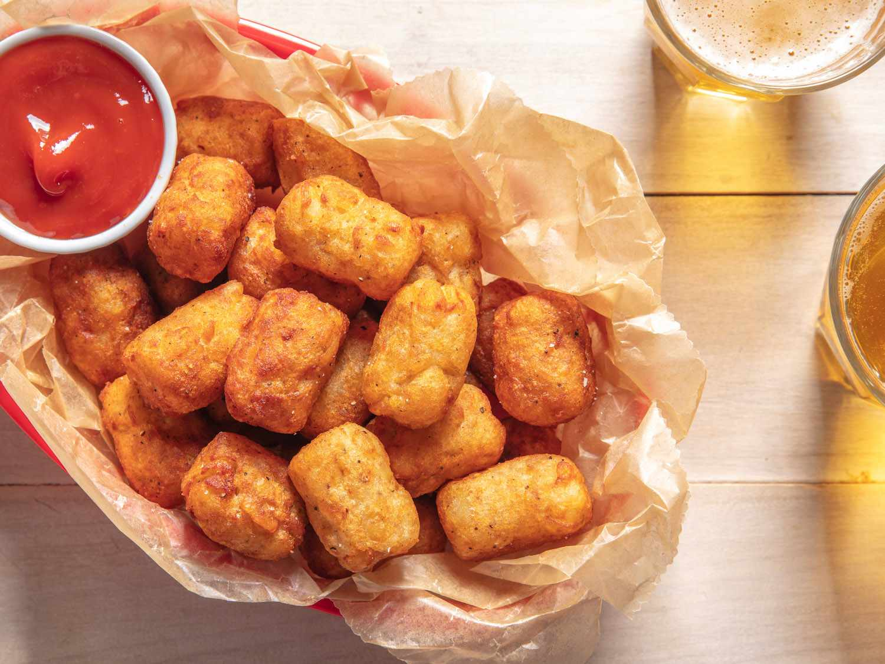

AMERICAN CUISINE
 Cheeseburger
Cheeseburger
A cheeseburger is a hamburger that is typically topped with one or more slices of cheese, such as cheddar, American, or Swiss cheese. It consists of a beef patty and served on a round bun. The patty is usually seasoned with salt and pepper, and sometimes additional spices such as garlic or onion powder.
 Hot Dog
Hot Dog
A hot dog is a type of sausage that is typically served in a long, soft bun and topped with various condiments. The sausage itself is made from a blend of meats, usually beef and pork, and is often seasoned with salt, pepper, and other spices.
 Apple Pie
Apple Pie
Apple pie is a classic dessert made with a sweetened apple filling and a pastry crust. The filling typically consists of sliced apples, sugar, cinnamon, and sometimes other spices like nutmeg or allspice. Apple pie is often served with a scoop of vanilla ice cream or a dollop of whipped cream.

Tater Tots
Tater tots are a popular American side dish made from grated potatoes that have been formed into small cylindrical shapes and deep-fried until crispy. Tater tots are a popular American side dish made from grated potatoes that have been formed into small cylindrical shapes and deep-fried until crispy.
 Reuben Sandwich
Reuben Sandwich
The Reuben sandwich is a classic American sandwich that is typically made with corned beef, Swiss cheese, sauerkraut, and Russian or Thousand Island dressing on rye bread. The ingredients are layered between slices of rye bread, then the sandwich is grilled or toasted until the cheese is melted and the bread is crispy.